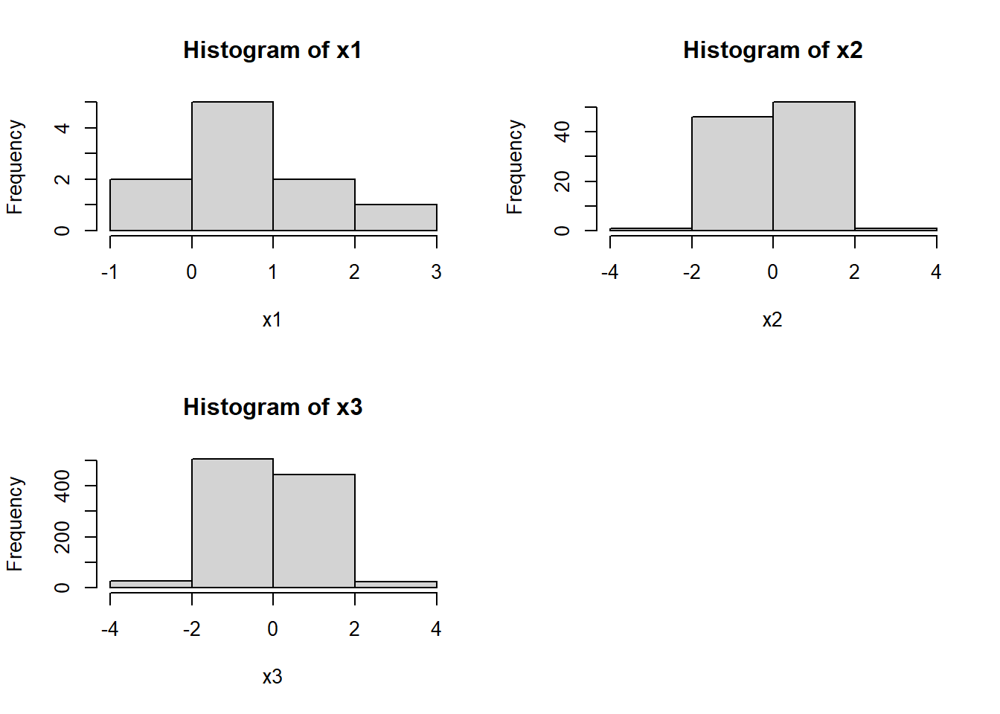
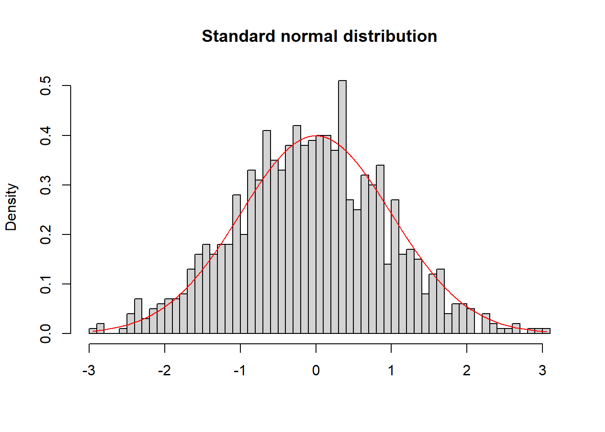
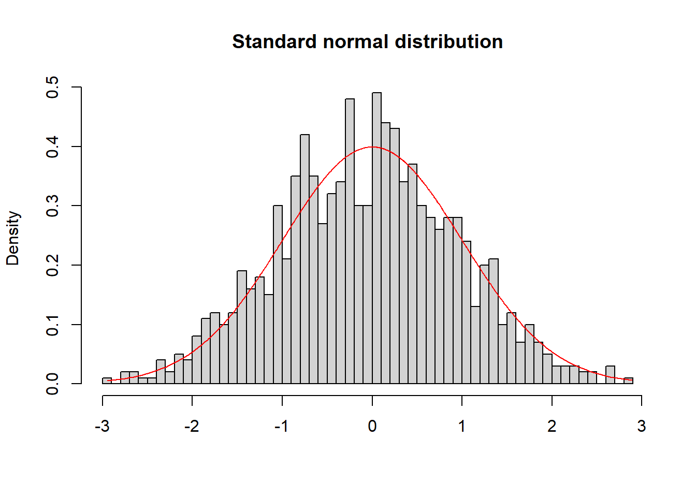
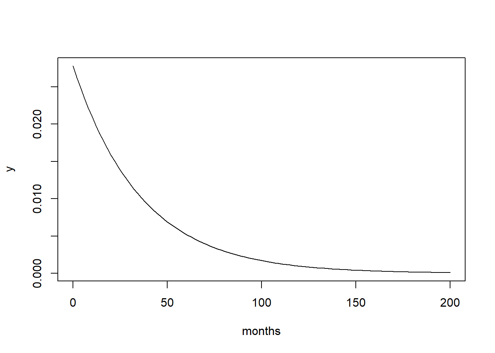
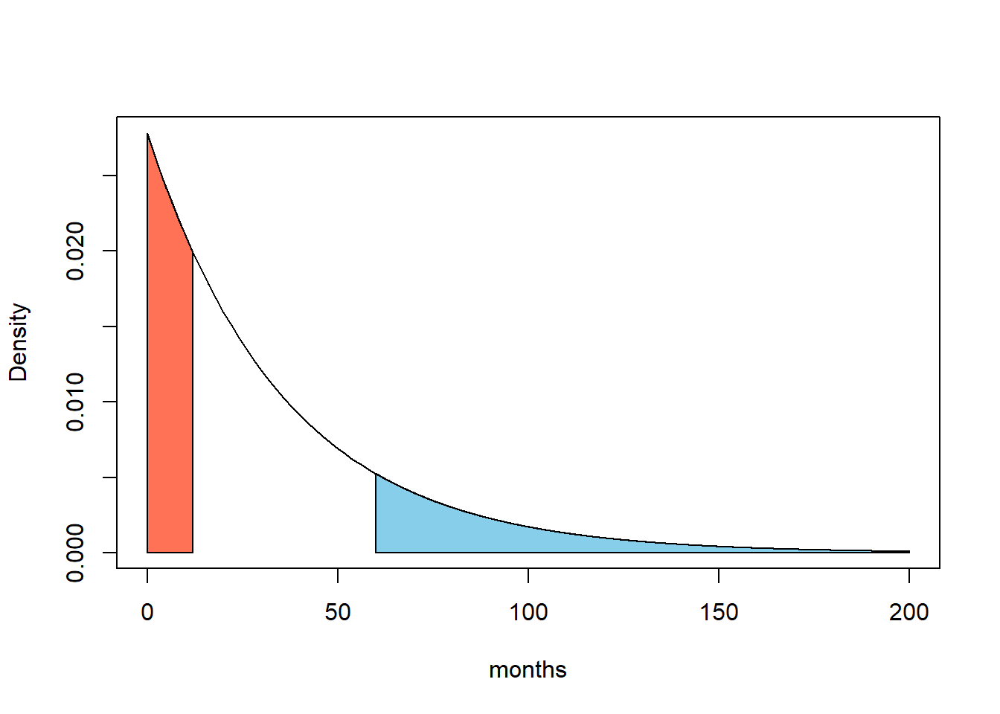

Probability Distributions
Functions for basic satisical models.
As an example, let \(X\) be a normally distributed random variable, \(X \sim N(\mu,\sigma^2)\). The following functions are included in R order to work with the normal distribution:
- dnorm(x,mean=\(\mu\),sd=\(\sigma\)), which returns the value of the probability density function in x for the normal distribution;
- pnorm(q,mean=\(\mu\),sd=\(\sigma\),lower.tail=TRUE), which returns \(P(X\leq q)\) when lower.tail is set to TRUE, otherwise \(P(X\geq q)\);
- qnorm(p,mean=\(\mu\),sd=\(\sigma\)), which calculates the theatrical quantile for a given probability level p;
- rnorm(n,mean=\(\mu\),sd=\(\sigma\)), which generates n observation from a normal distribution.
These concepts generally hold true for all the distribution functions built into R. Indeed, we will use rbinom() to generate observation from a binomial distribution. Use help(distributions) to discover all the other functions the others distributions.
Exercises
Exercise 2.1
Look at the three histograms.
par(mfrow=c(2,2))
## Random sample of size n=10 of N(0,1)-Distribution
x1 = rnorm(n = 10, mean = 0, sd = 1)
hist(x1, breaks=3)
## Random sample of size n=100 of N(0,1)-Distribution
x2 = rnorm(n = 100, mean = 0, sd = 1)
hist(x2, breaks=3)
## Random sample of size n=1000 of N(0,1)-Distribution
x3 = rnorm(n = 1000, mean = 0, sd = 1)
hist(x3, breaks = 3)
What is a reasonable choice of the parameter breaks? Obtain the following graph for the random sample x3.x3 = rnorm(n = 1000, mean = 0, sd = 1)
hist(x3, breaks = 50,probability=TRUE,xlab =NA, main='Standard normal distribution')
lines(sort(x3),dnorm(sort(x3)),col='red')
Exercise 2.2
Assume, the survival probability of patients after brain surgery is exponentially distributed. Assume further that the average survival time of a patient is 36 months, \(\lambda = 1/36\).
Plot the density function of the exponential distribution over the interval [0,200]. Plot the function over a sequence obtained using the seq() function.
x = seq(0, 200, length.out = 100)
y = dexp(x, rate = 1/36)
plot(x, y, type = "l", xlab = "months")
x = seq(0, 200, length.out = 100)
y = pexp(x, rate = 1/36)
plot(x, y, type = "l", xlab = "months")
Determine the probability of a particular patient of surviving equal or shorter than 12 month, namely \(P(X\leq 12)\).
pexp(q=12, rate=1/36)## [1] 0.2834687What is the probability of a particular patient of surviving longer than 5 years (i.e. 60 month)?
1 - pexp(q=60, rate=1/36) # equal to pexp(q=60, rate=1/36, lower.tail = FALSE) ## [1] 0.1888756The previous questions are equivalent to calculate the red and blue area in following plot.

Exercise 2.3
Let’s assume that the outcome of a therapy can be modeled as a binomial distribution , \(B(n,p)\). If \(n=10\) and \(p=0.7\), determine the probability that \(k = \{1, 4, 8\}\) OR LESS patients out of \(n = 10\) will have a successful therapy.
pbinom(1, 10, prob=0.7)
pbinom(q=4, size=10, prob=0.7)
pbinom(q=8, size=10, prob=0.7)
pbinom(q=c(1, 4, 8), size=10, prob=0.7)## [1] 0.0001436859
## [1] 0.04734899
## [1] 0.8506917
## [1] 0.0001436859 0.0473489874 0.8506916541Determine the probability that EXACTLY \(k = \{1, 4, 8\}\) patients out of \(n = 10\) will have a successful therapy.
dbinom(x=1, size=10, prob=0.7)
dbinom(x=4, size=10, prob=0.7)
dbinom(x=8, size=10, prob=0.7)
dbinom(x=c(1, 4, 8), size=10, prob=0.7)## [1] 0.000137781
## [1] 0.03675691
## [1] 0.2334744
## [1] 0.000137781 0.036756909 0.233474440